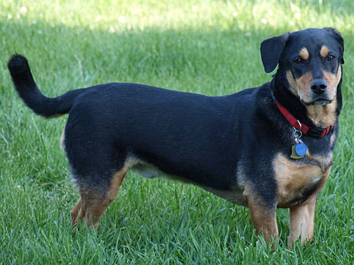
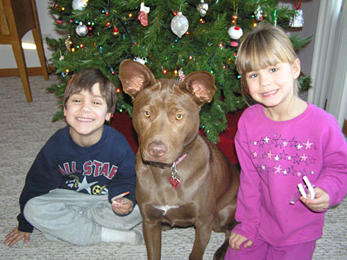
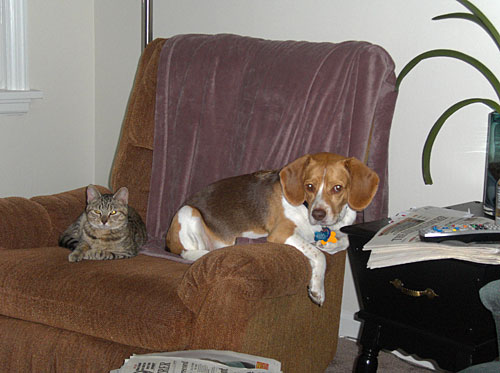
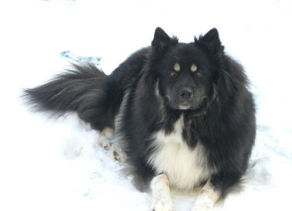
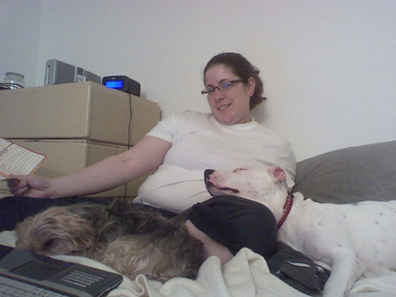

|
 |
|
For adoptions or more information, please call 630-341-3411 or e-mail: .
Click here to see our cats.
Click here to see our dogs.
|
|
|
| |
| |
HAPPY TAILS
We all love a happy ending to a story. Here are some stories about some happy endings with some of our adoptees...
If you have recently (or not so recently) adopted a Heartline animal and would
like to share your experiences and photos with us, please e-mail:
.
Letters
and pictures we have received...
Ernie

We have had Ernie (fifty pound - Basset Hound/Rottweiler mix) over two and
a half years now!
When we were first invited to meet him, he was so small and so frightened.
He had one small
safe zone and he would not wander very far from it. He was not sure he even
wanted to be looked
at let alone touched or held. We fell in love with the little guy immediately.
Thank you for agreeing that our
home was a good fit for his unique needs.
We had to put down our sixteen year old Fred (Wire
Haired Terrier/Springer Spaniel mix from Metro East Humane Society,
Edwardsville, IL) shortly after Ernie's arrival, so they did not have much
time to bond.
However, he and his other housemate, Freda (then a ten year old
Border Collie/Cocker Spaniel mix from the Kenosha County Humane Society,
Kenosha, WI),
hit it off right away. They have developed an almost human big sister/little
brother
relationship.
Ernie's third birthday was July 27, 2009. He has come a long way in the past
couple of years,
but he is still easily frightened and does not like new people or situations.
BUT once he trusts
you, you are a friend for life! When surprised or startled, he cowers. There
is not an aggressive
bone in his body. He is very smart and a fast learner, but sometimes you
can just see his inner struggles and
he wants to be brave and friendly, but something very strong holds him back.
At home he is a boisterous and happy guy. It is
hard to imagine life without him; isn't that the way it
should be?
Thank you again for bringing Ernie into our lives,
Jim and Judy Campbell
Sprocket

It's been around six months since we adopted Sprocket and as you can see from his picture he is very happy. His fur is a little damp around the edges from constantly playing with his big sister Gypsy (an 87 pound
German Shepherd mix). He has developed quite the personality. There is a large assortment of sounds he makes when no one is paying attention to him and he can go on and on. We swear he trying to talk to us (and Gypsy). His collar jangles so we take it off when we go to bed. This seems to upset him and gets really excited when he hears us pick it up to put it back on him in the morning. Walking on a leash without pulling is not a problem since he learned at Gypsy's side, but he thinks "sit" means "touch my behind to the floor for about one second". He'll stay sitting longer if his treat is withheld. No treat - the one second rule applies! Oh well, at least he stays, even if he is standing. He is quite the character and we are very fortunate to have him in our family.
Daisy

Hi Jennifer,
Just wanted to wish you and your family a Merry Christmas! Daisy is doing great.
We completed our training classes through the intermediate and we will
continue on to advanced once Daisy mellows out a little more!! Here are
a few pics. Thank you again for doing what you do and bringing her into
our family.
Angie
Levi

Hi Debbie,
We moved to Cincinnati two years ago and were able to get him
out of the apartment in Oak Park. He really loves having a house
to run around in with a fenced in back yard. We were in the new
house for about two months when a visitor kept coming up to our
screen door and saying hello to him. A young kitten was living
in the bush outside of our house and she became attached to Levi
immediately. It turned out that she belonged to the neighbor's
daughter, who moved away. So, we took her in and she became Levi's
sister Cleo. I'm attaching a picture of the two of them together
for you to see. We take both of them back to Illinois when we
go visit. They are almost inseparable. They are sleeping on the
bed together right now. He's doing so well though. We have a
spot for him to look out the window all day long. Usually, he
and Cleo are up there together
until Nanci or I come back from wherever we have gone. He's turned
our guest room into his bone area, and he likes to hide his treats
in the comforter on the bed. Nanci and I are expecting our first
baby in August, and we'll have to get Levi used to that. He's
really great with kids, but up until now, he's been the baby.
Cleo is an extremely affectionate cat and she is almost like
another dog. But Levi is like our first born. We took him to
a baby shower, and one of our other couple friends brought their
three week old. When nobody was looking, Levi snuck over to the
baby and planted a huge lick right on her face. Can you imagine opening your eyes for the first time, only to see a beagle getting ready to lick you?
But he's definitely the spoiled member of the family. My Mom passed away last summer and she loved Levi. She was never a fan of animals, but Levi was different. When she was sick, Levi would sleep in bed with her and sit on her lap. My parents would buy him raw hides and toys for whenever he came to visit. Levi was usually the first thing she would ask about when I called home. Mom was a big fan of emailing distant friends and relatives and she used to send pictures of him to everyone. We took Levi back to Illinois for the funeral services and everyone thought he was her dog. It was hilarious- that was how much she loved Levi.
We always tell people that he is related to Uno- the Westminster Champ. My great Uncle runs hunting beagles and he wants to make Levi one of his team. lol. We tell him that Levi is too philosophical for that.
Anyway, thanks for checking in with us and Levi. He's getting ready for spring time. We have alot of snow down here, which he doesn't like because his legs are too short.
I am attaching some pictures for you.
Rick and Nanci
Lucca

Hey Debbie!
Here is a picture of Lucca. He LOVES the snow and will lay in it for hours if you dont make him come inside! He also shows up in a picture quite well with the white background! Anyway, hope your enjoying the Holidays! (Lucca likes his Christmas tree alot)
Merry Christmas!
Shannon, Lori, Lucca and Cairo
p.s. we also want you to know that he really is NOT that fat!! It must be all the hair!!!!
Dice

Hey Jen and the rest of Animal Heartline! First off Krystle and I want
to say Thank You! We can not express enough how happy we are to have
Dice in our life and be a part of his! He is an absolutely wonderful
dog and we couldn't be happier with our decision to adopt him! Mikey,
his brother, and him get along pretty well. Mikey is an older dog and
can be a litle grumpy but they co exist well and at times even play together.
We have had my parents dog Lucy over and my parents have also spent time
watching Dice at their place. Lucy and him get along great! Dice likes
to hoard all of the rawhides but other than they are great playmates.
Due to the unfortunate and unexpected death of Krystles father Ray we
have been spending quite some time at Krystle's parents house with her
stepmom. They have a fenced in back yard and have two other dogs there.
Dice has been getting alot of exercise and alot of play time with them.
We are looking forward to a summer full of camping, dog parks, and maybe
even the beach. His knee still bothers him sometimes but we are watching
it carefully and waiting for him to finish growing. We have attached
some pictures and video of Dice and his siblings for you too see of !
Once again thank you so much for adopting Dice to us!
Matt Scheurman and Krystle Schleich
Casey

After visiting PAWS and Anti-Cruelty Society in
Chicago every weekend for 3 months for my first dog adoption, I hadn't
found 'my dog' yet. While searching the internet, I came upon Petfinder.com
and plugged in the type of dog I was looking for.
After scrolling through hundreds of pictures over the course of a
week, I saw the most unusal and intriguing face. When I clicked on
Casey, I saw him playing with his foster family's young daughter
and saw his gentle nature. It was important for me that a dog be
good with young kids since my brother has four. It was the wonderful
description that really captured my attention discussion how the
shelter staff had raved about his personality and temperament.
Christina and her husband brought Casey down to the city (his first
time in an urban setting with all kinds of sounds and noises to spook
him) for my family and I to meet him. While obviously shy at first,
Christina was smart enough to capture my niece's approval by giving
her some food to feed him which he devoured and licked her hand incessantly.
The deal was done.
Now it's 10 months later and I can't imagine this sweet boy not being
in my life. Fortunately, he's able to come to work with me daily
and I think our bond is rock solid based on the time we spendt together.
How someone could even consider giving him up is beyond me, but I'm
blessed they did.
I want to thank Christina and the wonderful people at Animal Heartline
for bringing Casey into my life and giving myself and my family so
much joy each and every day. I want to express my appreciation for
the foster family for house training him and giving him the ability
to trust a new environment since I understand he was bounced around
early in his life. I couldn't ask for a more special, loving, devoted,
and charismatic dog....especially being a first time owner.
Thank you again and please don't stop your mission of placing these
wonderful animals in loving homes.
Jason
Moby

I
have been wanting to send you a few photos of Moby to give you
an
update. He is doing wonderful. He adjusted fine to our busy family
atmosphere. He loves the boys and vice versa. They have him running
and playing from the time he gets up in the morning to the time
he goes
to bed. He
is completely housebroken and did very well in obedience
classes. We put a small pond in our back yard in the fall and
of course
Moby thinks this is his drinking well and swimming hole. He is
approximately 30 pounds of love at this point. He
is a great dog! We
love him! I hope all your other adoptions are going just as well.
Thanks again and have a wonderful year!
Shannon
Hallstro
Samson
a.k.a. TANK

Hi Norma,
I hope all is going well for you. My son nicknamed Samson, Tank (I
am sure you know why). When we were in Kohl's we saw this tank pillow
and thought Samson aka Tank would like it so we purchased it for him
(not spoiled of course). I thought you would like to see him sleeping
with his name sake. He is such a character now that Breana moved in
with her two kitties. He is scared of the little one but jumps the
bigger one. He loves being in the room with all of them I think it
reminds him of old times. Well, have a good evening!
Vicki/Samson
Butterscotch

Debbie
and Lynne.
Here
is a photo of Butterscotch. He's settling in really well and
we're loving having him around!
Thanks,
Rebecca and Evan
Teeko

Hello
Animal Heartline Gang!!!!
I thought
I would take a moment to give you an update on Teeko. We are so happy
to have him in our family! He is our little gift.
Teeko
has accomplished a lot over the past week. After only one day he
was walking on the leash right alongside Shiloh. We have been crating
him at night and he has been sleeping completely through the night
since Thursday. He will play fetch for as long as you are willing.
Teeko’s
personality has really started to come out. He is so cuddly and sweet
but also loves to run, jump and play. He is definitely a terrier.
He is already “defending” the yard from passing pedestrians
and cyclists. This weekend we took him to the pet store to buy him
some sweaters for winter and a carrying bag. No matter how many sweaters
we tried on him or bags we put him in, he sat perfectly still content
with the attention. He’s the same way when I brush him. He is
happy and healthy and we couldn’t be more pleased with our new
little boy. I hope that the other yorkies bring their new families
as much happiness as Teeko has brought to us. Thank you for working
so well with Lora and I and we will keep you posted on Teeko’s
progress.
|
|
|